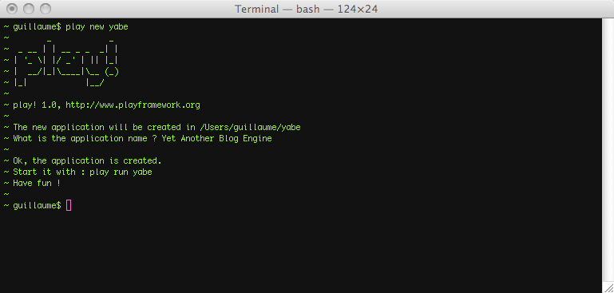
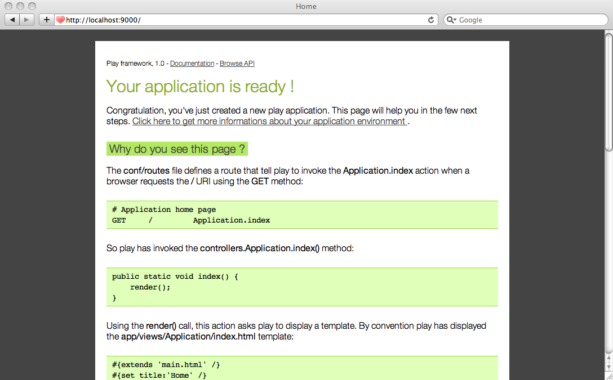
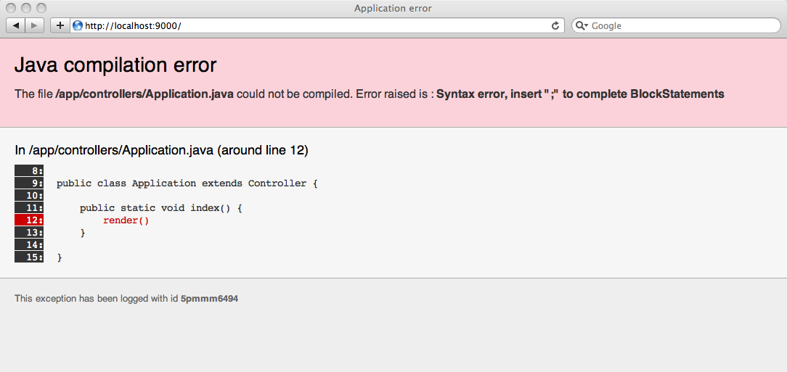

Starting up the project
Introduction
In this tutorial you will learn the Play framework by coding a real web application, from start to finish. In this application, we will try to use everything you would need in a real project, while introducing good practices for Play application development.
We have split the tutorial into several independent parts. Each part will introduce more complex features, and provide everything that a real project needs: validation, error handling, a complete security framework, an automated test suite, a shiny web interface, an administration area, etc.
All the code included in this tutorial can be used for your projects. We encourage you to copy and paste snippets of code or steal whole chunks.
The project
We chose to create yet another blog engine. It’s not a very imaginative choice but it will allow us to explore most of the functionality needed by a modern web application.
To make things a bit more interesting, we will manage several users with different roles (editor, admin).
We will call this blog engine project yabe.
This tutorial is also distributed as a sample application. You can find the final code in your Play installation’s samples-and-tests/yabe/ directory.
Prerequisites
First of all, make sure that you have a working Java installation. Play requires Java 5 or later.
As we will use the command line a lot, it’s better to use a Unix-like OS. If you run a Windows system, it will also work fine; you’ll just have to type a few commands in the command prompt.
We will assume that you already have knowledge of Java and Web development (especially HTML, CSS and JavaScript). However you don’t need to have a deep knowledge of all the Java Enterprise Edition (JEE) components. Play is a ‘full stack’ Java framework and it provides or encapsulates all the parts of the Java API that you will need. There is no need to know how to configure a JPA entity manager or deploy a JEE component.
You will of course need a text editor. If you are accustomed to using a fully-featured Java IDE like Eclipse or NetBeans you can of course use it. However with Play you can have fun working with a simple text editor like Textmate, Emacs or VI. This is because the framework manages the compilation and the deployment process itself. As we will soon see…
Later in this tutorial we will use Lighttpd and MySql to show how to deploy a Play application in ‘production’ mode. But Play can work without these components so if you can’t install them, it’s not a problem.
Installing the Play framework
Installation is very simple. Just download the latest binary package from the download page and unzip it to any path.
If you’re using Windows, it is generally a good idea to avoid space characters in the path, so for example c:\play would be a better choice than c:\Documents And Settings\user\play.
To work efficiently, you need to add the Play directory to your working path. It allows you to just type play at the command prompt to use the play utility. To check that the installation worked, just open a new command line and type play; it should show you the play basic usage help.
Project creation
Now that Play is correctly installed, it’s time to create the blog application. Creating a Play application is pretty easy and fully managed by the play command line utility. That allows for standard project layouts between all Play applications.
Open a new command line and type:
~$ play new yabe
It will prompt you for the application full name. Type Yet Another Blog Engine.

The play new command creates a new directory yabe/ and populates it with a series of files and directories, the most important being:
app/ contains the application’s core, split between models, controllers and views directories. It can contain other Java packages as well. This is the directory where .java source files live.
conf/ contains all the configuration files for the application, especially the main application.conf file, the routes definition files and the messages files used for internationalization.
lib/ contains all optional Java libraries packaged as standard .jar files.
public/ contains all the publicly available resources, which includes JavaScript files, stylesheets and images directories.
test/ contains all the application tests. Tests are written either as Java JUnit tests or as Selenium tests.
Because Play uses UTF-8 as single encoding, it’s very important that all text files hosted in these directories are encoded using this charset. Make sure to configure your text editor accordingly.
Now if you’re a seasoned Java developer, you may wonder where all the .class files go. The answer is nowhere: Play doesn’t use any class files; instead it reads the Java source files directly. Under the hood we use the Eclipse compiler to compile Java sources on the fly.
That allows two very important things in the development process. The first one is that Play will detect changes you make to any Java source file and automatically reload them at runtime. The second is that when a Java exception occurs, Play will create better error reports showing you the exact source code.
In fact Play keeps a bytecode cache in the application’s tmp/ directory, but only to speed things up between restart on large applications. You can discard this cache using the play clean command if needed.
Running the application
We can now test the newly-created application. Just return to the command line, go to the newly-created yabe/ directory and type play run. Play will now load the application and start a web server on port 9000.
You can see the new application by opening a browser to http://localhost:9000. A new application has a standard welcome page that just tells you that it was successfully created.

Let’s see how the new application can display this page.
The main entry point of your application is the conf/routes file. This file defines all accessible URLs for the application. If you open the generated routes file you will see this first ‘route’:
GET / Application.index
That simply tells Play that when the web server receives a GET request for the / path, it must call the Application.index Java method. In this case, Application.index is a shortcut for controllers.Application.index, because the controllers package is implicit.
When you create standalone Java applications you generally use a single entry point defined by a method such as:
public static void main(String[] args) {
...
}
A Play application has several entry points, one for each URL. We call these methods action methods. Action methods are defined in special classes that we call controllers.
Let’s see what the controllers.Application controller looks like. Open the yabe/app/controllers/Application.java source file:
package controllers;
import play.mvc.*;
public class Application extends Controller {
public static void index() {
render();
}
}
Notice that controller classes extend the play.mvc.Controller class. This class provides many useful methods for controllers, like the render() method we use in the index action.
The index action is defined as a public static void method. This is how action methods are defined. You can see that action methods are static, because the controller classes are never instantiated. They are marked public to authorize the framework to call them in response to a URL. They always return void.
The default index action is simple: it calls the render() method which tells Play to render a template. Using a template is the most common way (but not the only one) to generate the HTTP response.
Templates are simple text files that live in the /app/views directory. Because we didn’t specify a template, the default one for this action will be used: Application/index.html
To see what the template looks like, open the /yabe/app/views/Application/index.html file:
#{extends 'main.html' /}
#{set title:'Home' /}
#{welcome /}
The template content seems pretty light. In fact, all you see are Play tags. Play tags are similar to JSP tags. This is the #{welcome /} tag that generates the welcome message you saw in the browser.
The #{extends /} tag tells Play that this template inherits another template called main.html. Template inheritance is a powerful concept that allows you to create complex web pages by reusing common parts.
Open the /yabe/app/views/main.html template:
<!DOCTYPE html>
<html>
<head>
<title>#{get 'title' /}</title>
<meta charset="${_response_encoding}">
<link rel="stylesheet" media="screen"
href="@{'/public/stylesheets/main.css'}">
#{get 'moreStyles' /}
<link rel="shortcut icon" type="image/png"
href="@{'/public/images/favicon.png'}">
<script type="text/javascript" charset="${_response_encoding}"
src="@{'/public/javascripts/jquery-1.5.2.min.js'}"></script>
#{get 'moreScripts' /}
</head>
<body>
#{doLayout /}
</body>
</html>
Do you see the #{doLayout /} tag near the bottom? This is where the content of Application/index.html will be inserted.
We can try to edit the controller file to see how Play automatically reloads it. Open the yabe/app/controllers/Application.java file in a text editor, and add a mistake by removing the trailing semicolon after the render() call:
public static void index() {
render()
}
Go to the browser and refresh the page. You can see that Play detected the change and tried to reload the Application controller. But because you made a mistake, you get a compilation error.

Ok, let’s correct the error, and make a real modification:
public static void index() {
System.out.println("Yop");
render();
}
This time, Play has correctly reloaded the controller and replaced the old code in the JVM. Each request to the / URL will output the ‘Yop’ message to the console.
You can remove this useless line, and now edit the yabe/app/views/Application/index.html template to replace the welcome message:
#{extends 'main.html' /}
#{set title:'Home' /}
<h1>A blog will be here</h1>
Like for Java code changes, just refresh the page in the browser to see the modification.
We will now start to code the blog application. You can either continue to work with a text editor or open the project in a Java IDE like Eclipse or NetBeans. If you want to set-up a Java IDE, see Setting-up your preferred IDE.
Setting-up the database
One more thing before starting to code. For the blog engine, we will need a database. For development purposes, Play comes with a stand alone SQL database management system called H2. This is the best way to start a project before switching to a more robust database if needed. You can choose to have either an in-memory database or a filesystem database that will keep your data between application restarts.
At the beginning, we will do a lot of testing and changes in the application model. For that reason, it’s better to use an in-memory database so we always start with a fresh data set.
To set-up the database, open the yabe/conf/application.conf file and uncomment this line:
db=mem
As you can see in the comments, you can easily set-up any JDBC compliant database and even configure the connection pool.
This tutorial is designed to work with the in-memory database; instructions for using JPA with other databases is outside the scope of this tutorial.
Now, go back to your browser and refresh the welcome page. Play will automatically start the database. Check for this line in the application logs:
INFO ~ Connected to jdbc:h2:mem:play
Using a version control system to track changes
When you work on a project, it’s highly recommended to store your source code in a version control system (VCS). It allows you to revert to a previous version if a change breaks something, work with several people and give access to all the successive versions of the application.
When storing a Play application in a VCS, it is important to exclude the tmp/, modules/, lib/, test-result/ and logs/ directories.
If you are using Eclipse, and the play eclipsify command, then you should also exclude .classpath and eclipse/.
Bazaar
Here we will use Bazaar as an example. Bazaar is a distributed source version control system.
Installing Bazaar is beyond the scope of this tutorial but it is very easy on any system. Once you have a working installation of Bazaar, go to the blog directory and init the application versioning by typing:
$ bzr init
$ bzr ignore tmp
$ bzr ignore modules
$ bzr ignore lib
$ bzr ignore test-result
$ bzr ignore logs
Now we can commit our first blog engine version:
$ bzr add
$ bzr commit -m "YABE initial version"
Git
Git is another distributed version control system, see its documentation for more information.
Create a git working repository at the application root directory:
$ git init
Create a .gitignore file containing the following content:
/tmp
/modules
/lib
/test-result
/logs
Add the content of the application and commit it:
$ git add .
$ git commit -m "YABE initial version"
Version 1 is committed and we now have a solid foundation for our project.
Go to the A first iteration of the data model.